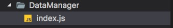

编码规范
1.命名规范
驼峰式命名法介绍：驼峰式命名法由小(大)写字母开始，后续每个单词首字母都大写。
按照第一个字母是否大写，分为：
① Pascal Case 大驼峰式命名法：首字母大写。eg：StudentInfo、UserInfo、ProductInfo
② Camel Case 小驼峰式命名法：首字母小写。eg：studentInfo、userInfo、productInfo
1.1变量命名
命名方法：小驼峰式命名法。
命名规范：前缀应当是名词。(函数的名字前缀为动词，以此区分变量和函数)
命名建议：尽量在变量名字中体现所属类型，如:length、count等表示数字类型；而包含name、title表示为字符串类型。
示例：
//好的命名方式
var maxCount = 10;
var tableTitle = 'LoginTable';
//不好的命名方式
var setCount = 10;
var getTile = 'LginTale';
1.2函数命名
命名方法：小驼峰式命名法。
命名规范：前缀应当为动词。
命名建议：可使用常见动词约定。
| 动词 | 含义 | 返回值 |
| can | 判断是否可执行某个动作（权限） | 返回bool：true，false |
| has | 判断是否含有某个值 | 返回bool：true，false |
| is | 判断是否为某个值 | 返回bool：true，false |
| get | 获取某个值 | 函数返回一个非bool值 |
| set | 设置某个值 | 无返回值，返回是否设置成功 |
| load | 加载某些数据 | 无返回值或返回是否加载完成 |
//是否可阅读
function canRead() {
return true;
}
//获取名称
function getName() {
return this;
}
1.3 常量命名
命名方法：名称全部大写或首字母大写。
命名规范：使用大写字母和下划线来组合命名，下划线用以分割单词。
命名建议：无。
示例：
const MAX_COUNT = 10;//Max_Count
const URL = 'http://www.baidu.com';
1.4 构造函数命名
介绍：构造函数也属于函数的一种，只不过采用new 运算符创建对象。
命名方法：大驼峰式命名法，首字母大写。
命名规范：前缀为名称。
命名建议：无。
示例：
function Student(name) {
this.name = name;
}
let st = new Student('tom');
1.5 类成员命名
类的成员包含：
① 公共属性和方法：跟变量和函数的命名一样。
② 私有属性和方法：前缀为_(下划线)，后面跟公共属性和方法一样的命名方式。
示例：
function Student(name) {
var _name = name;//私有成员
//公共方式
this.setName = function () {
_name = value;
}
}
var st = new Student('tom');
st.setName('jerry');
console.log(st.getname()); // =>jerry:输出_name私有变量的值
1.6 全局变量、常量命名规范
为了区分项目新老变化，对于全局变量、常量的命名采用使用特殊符号($)+小驼峰式命名
示例：
Object.assign(global, {
$mages: images,
$RypYo: RypYo,
$Toast: RypYo.toastShow,
$RunLoading: RypYo.runLoading,
$CloseLoading: RypYo.closeLoading,
$screenW: deviceWidth,
$screenH: deviceHeight,
$scaleSize: scaleSize
})
2. 注释规范
2.1 单行注释
使用方式：
① 单独一行：//(双斜线)与注释文字之间保留一个空格。
② 在代码后面添加注释：//(双斜线)与代码之间保留一个空格，并且//(双斜线)与注释文字之间保留一个空格。
③ 注释代码：//(双斜线)与代码之间保留一个空格。
使用场景：
① 声明变量、常量、方法名时，在其上方一行进行注释
② 注释代码
2.2多行注释及函数注释
注释要尽量简单，清晰明了。着重注释的意思，对不太直观的部分进行注解：
使用方法：
① 若开始(/*)和结束(*/)都在一行，推荐采用单行注释。
② 若至少三行注释时，第一行为/*，最后行为*/，其他行以开始，并且注释文字与保留一个空格。
注释名 语法 含义 示例:
@param 参数名 {参数类型} 描述信息 描述参数的信息 @param name {String} 传入名称
@return {返回类型} 描述信息 描述返回值的信息 @return {Boolean} true:可执行;false:不可执行
@author 作者信息 [附属信息：如邮箱、日期] 描述此函数作者的信息 @author 张三 2015/07/21
@version XX.XX.XX 描述此函数的版本号 @version 1.0.3
@example 示例代码 演示函数的使用 @example setTitle('测试')
3. 布局规范
3.1空格
a）var与变量名之间留一个空格，变量名与等号之间留一个空格，等号与初始值之间留一个空格，初始值与分号之间不留空格。如：var i = 10;
b）使用字面量方式声明引用类型变量时，各个属性与冒号之间不留空格，冒号与初始值之间留一个空格。如：
var Person = { age: 16, name: "Sam" };
c）function与函数名之间留一个空格，函数名与()之间不留空格，()与{之间留一个空格。
d）函数的各个参数之间留一个空格。
e）if、while、for与左括号之间留一个空格，以强调关键字；switch、with与左括号之间不留空格。
f) 二元操作符与左右两个操作数之间留一个空格。当某行代码较长时，也可不留空格。
3.2换行
a）每行语句占用一行，不要多个语句一行。
b）if、while、for等块级作用域后的大括号{不要另起一行，就放在关键字同一行。
3.3缩进
a）缩进使用4个空格，不要使用tab。
b）作用域不一样时就应当进行缩进，以显示出其层次关系。
4. 有关ES6代码规范
(1）ES6提出了两个新的声明变量的命令：let 和 const 。 建议不再使用var，而使用let 和const 。优先使用const。
//bad
var a = 1, b =2 , c = 3;
// good
const [a,b,c] = [1,2,3];
（2）静态字符串一律使用单引号或反引号，不建议使用双引号。动态字符使用反引号。
//bad
const a = "foobar";
const b = 'foo'+a+'bb';
// good
const a = 'foobar';
const b = `foo${a}bar`;
（3）优先使用结构体赋值; 函数的参数如果是对象的成员，优先使用解构赋值。
const arr = [1, 2, 3, 4];
// bad
const first = arr[0];
const second = arr[1];
// good
const [first, second] = arr;
// bad
function getFullName(user) {
const firstName = user.firstName;
const lastName = user.lastName;
}
// good
function getFullName(obj) {
const { firstName, lastName } = obj;
}
// best
function getFullName({ firstName, lastName }) {
}
4）如果函数返回多个值，优先使用对象的解构赋值，而不是数组的解构赋值。这样便于以后添加返回值，以及更改返回值的顺序。
// bad
function processInput(input) {
return [left, right, top, bottom];
}
// good
function processInput(input) {
return { left, right, top, bottom };
}
const { left, right } = processInput(input);
（5）对象的属性和方法尽量采用简洁表达法，这样易于描述和书写
// bad
var ref = 'some value';
const atom = {
ref:ref,
value:1,
addValue:function(value){
return atom.value + value;
},
}
// good
const atom = {
ref,
value:1,
addValue(value){
return atom.value + value;
}
}
5. 项目中基本要求
（1）项目中列表页，刚进入时默认使用空白页，待数据加载完时，再区分无数据还是有数据页面；
（2）使用一些加载数据时，使用前先判断是否有数据，避免数据延迟或错误出现不知名崩溃问题；
（3）项目中，无用代码要删除，特殊地方做好注释
6. 其他注意点
规范
-
模块规范
-
文件规范
- 文件夹 | 文件名
- 首字母大写 驼峰标识
- 文件夹 | 文件名
-
代码规范
-
头部标识(文件说明)
``` VsCode 插件fileheader /* * @Creator: mikey.zhaopeng * @Date: 2016-07-29 15:57:29 * @Last Modified by: mikey.zhaopeng * @Last Modified time: 2016-08-09 13:29:41 * @Desc 该文件描述 */ ``` -
方法
* 注释(必要参数说明 和 方法解释) ``` /** * 替换默认拦截器 * @param {*} key 需要替换的拦截器key值 * @param {*} interceptor 替换成哪个拦截器 * 返回替换的拦截器 */ replaceInterceptor(key, interceptor) { } ``` * 声明 ``` class Student{ //第一种声明 /** * 推荐 */ method1=()=>{} //第二中声明 method2(){} } ``` * 权限（私有和公开） * javascript 没有publish protect private * 规定 下划线方法为私有方法 ``` 公开方法 外部可以拿到对象直接调用该方法 addInterceptor = (interceptor) => {}; 私有方法 下划线开头 _addInterceptor = (interceptor) => {}; ``` * this ``` fetch().then(()=>{ this }) ``` * 方法统一使用 箭头函数()=>{} * function(){} 函数直接绑定 ``` function(){}.bind(this) ``` -
state状态声明
-
组件初始方法中,声明所有使用的变量名
-
简单明了的解释变量含义
constructor(props) { this.state = { sex:"",//用户性别 data:[]//列表数据 } }
-
-
图片资源导入
``` 组件图片统一加载 this.userImage = images.home.userImage() render(){ return ( <Image source = {this.userImage}></Image> ) } ``` -
render
* 只进行简单的数据处理，复杂数据处理的需要单独处理 * 不容许进行出现 setState | 网络请求代码 | 耗时操作 await
-
-
工具类导出
-
文件 + index.js

-
单例工具类
class GlobalTool{} export default new GlobalTool()
-
-
资源导出
-
图片
使用方法调用加载 ，防止图片没使用就已经加载 icon:()=>{ return require("......") }
-
7.总结项目中需要规范的地方
- 全局常量名称命名规范
- 类中定义的常量、变量、函数（方法）、类及文件头的注释规范
- 文件、文件夹、类名、函数（方法）名的名称命名的规范
- 无用代码的删除保留处理
- 区分私有方法与提供外部调用的方法的规范